🌡️ Cambio Climático
El cambio climático es la alteración a largo plazo de las temperaturas y de los patrones del clima en todo el planeta. Aunque puede tener causas naturales, desde el siglo XIX la principal causa es la actividad humana, sobre todo la quema de petróleo, carbón y gas, que libera gases de efecto invernadero como el dióxido de carbono (CO₂) y el metano (CH₄). Estos gases atrapan el calor del Sol en la atmósfera y provocan el calentamiento global.
Sus consecuencias ya se sienten: derretimiento de glaciares y de los polos, aumento del nivel del mar, sequías e incendios más intensos, lluvias e inundaciones extremas, pérdida de cosechas y riesgo de extinción para muchas especies, como el oso polar, que pierde el hielo donde caza y vive.
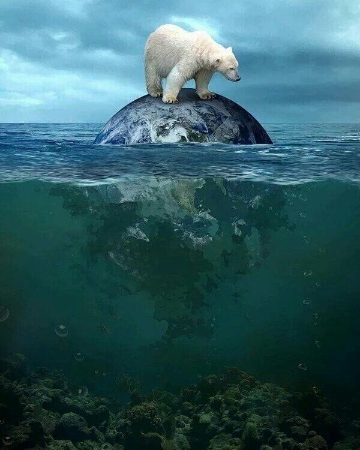
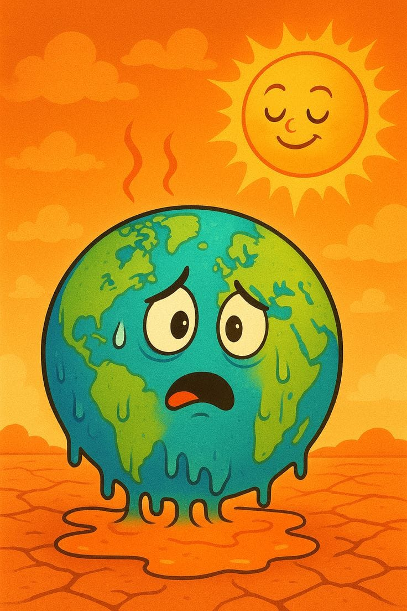
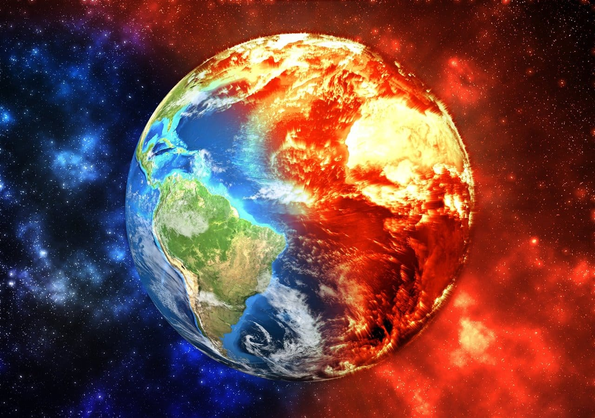
Causas principales
- Quema de combustibles fósiles (transporte, industria y energía).
- Deforestación: menos árboles significan menos CO₂ absorbido.
- Ganadería intensiva y agricultura, que emiten metano y óxido nitroso.
Consecuencias
- Deshielo de glaciares y aumento del nivel del mar.
- Fenómenos extremos: olas de calor, sequías, huracanes e inundaciones.
- Pérdida de biodiversidad y amenaza a la seguridad alimentaria.
¿Qué puedo hacer?
Ahorrar energía, usar transporte sostenible, consumir de forma responsable, sembrar árboles y compartir lo aprendido.
🦜 Fauna y Flora
La fauna es el conjunto de animales de un lugar y la flora es el conjunto de plantas. Juntas forman la biodiversidad, es decir, la variedad de vida que existe en la Tierra. Colombia es uno de los países más biodiversos del mundo, con selvas, páramos, arrecifes, humedales y montañas donde viven miles de especies.
La biodiversidad es esencial: las plantas producen el oxígeno que respiramos, los insectos polinizan nuestros cultivos, los bosques regulan el agua y el clima, y los ecosistemas nos brindan alimentos, medicinas y bienestar. Cuando desaparece una especie, se rompe un eslabón de la cadena de la vida.
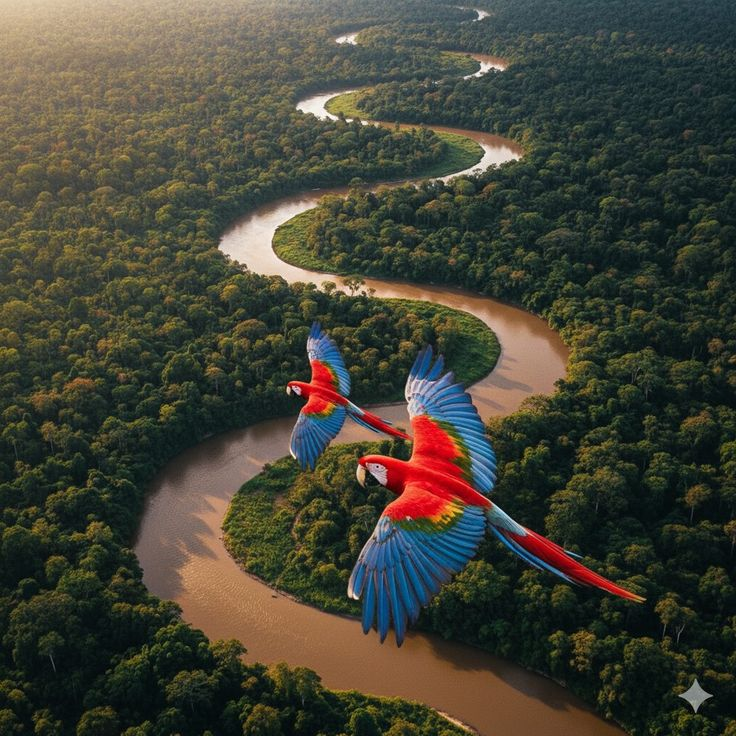
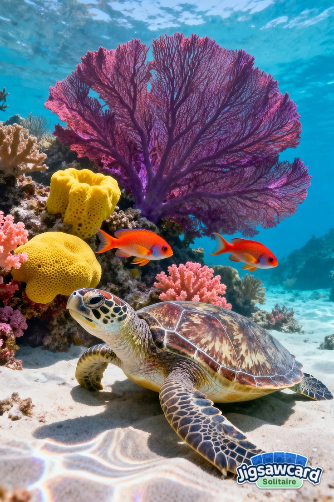
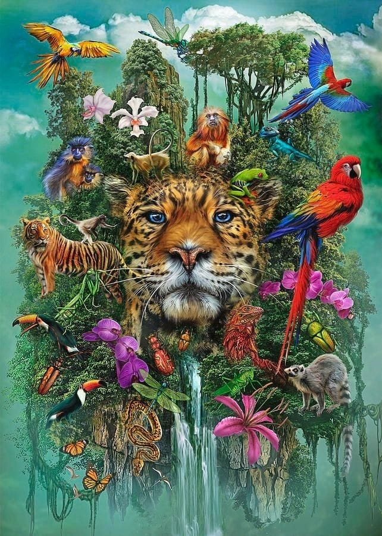
¿Por qué es importante la biodiversidad?
- Mantiene el equilibrio de los ecosistemas y las cadenas alimentarias.
- Aporta alimentos, madera, fibras y medicinas.
- Regula el clima, purifica el agua y protege el suelo.
Principales amenazas
- Deforestación y pérdida de hábitat.
- Tráfico ilegal de fauna y flora.
- Contaminación y cambio climático.
¿Cómo protegerla?
No comprar animales silvestres, respetar las áreas protegidas, sembrar plantas nativas y cuidar los ríos, bosques y mares.
🏭 Contaminación
La contaminación es la presencia de sustancias o energías dañinas en el ambiente que afectan la salud de los seres vivos y el equilibrio de los ecosistemas. Existen varios tipos, y los más comunes son:
Contaminación del aire: humo de fábricas y vehículos, quema de basura y gases tóxicos que
causan enfermedades respiratorias y aceleran el calentamiento global.
Contaminación del agua: vertido de residuos, químicos, aceites y plásticos en ríos, lagos y
mares, que envenena la vida acuática y reduce el agua potable.
Contaminación del suelo: acumulación de basura, pesticidas y desechos industriales que
vuelven infértil la tierra y contaminan los alimentos.
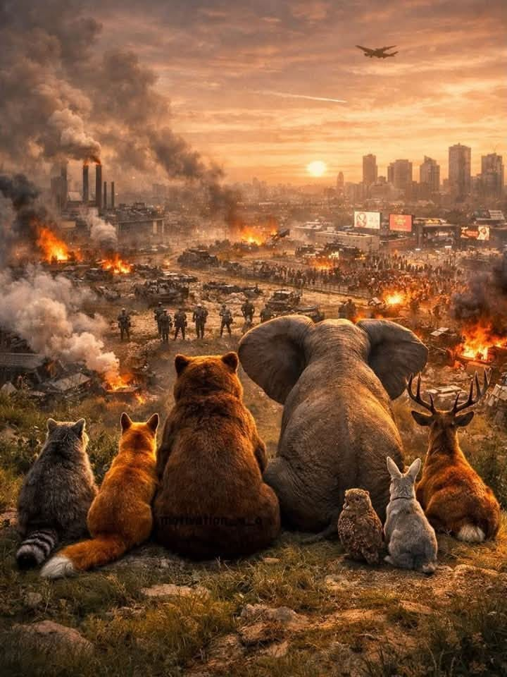
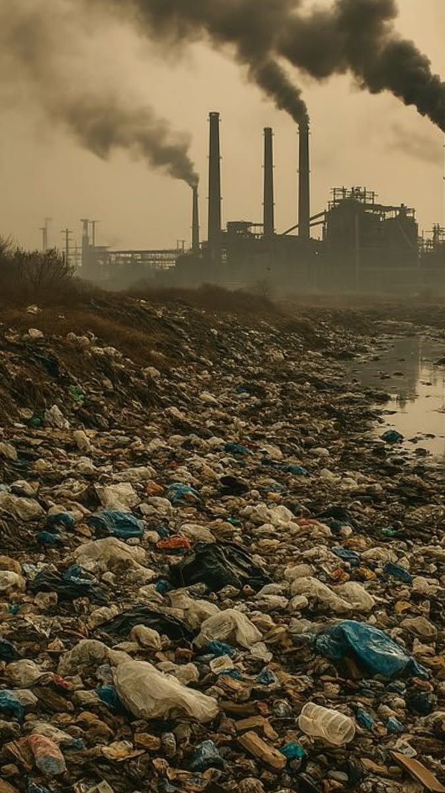
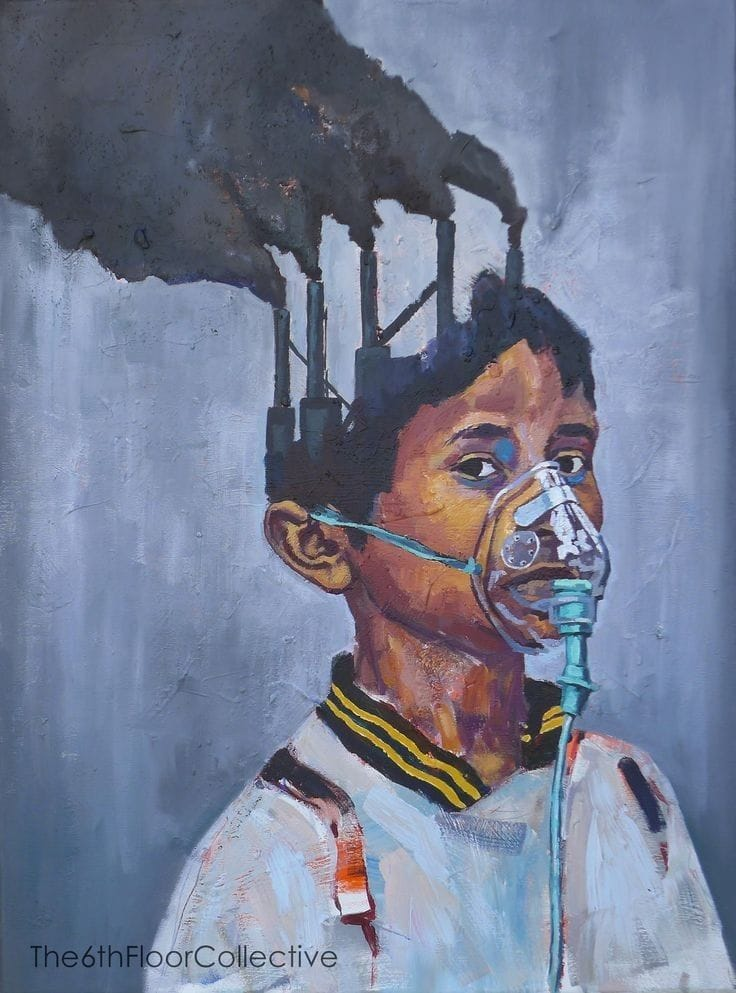
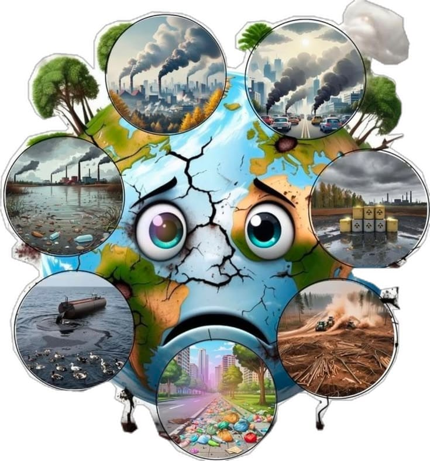

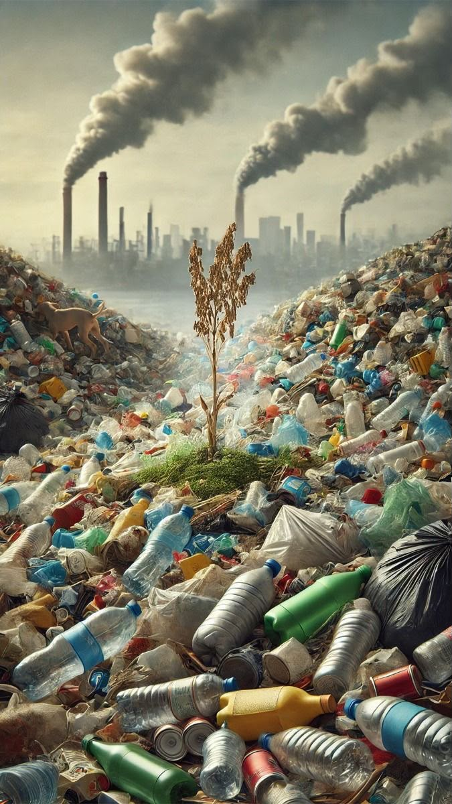
Fuentes de contaminación
- Industria, transporte y quema de combustibles.
- Residuos domésticos y plásticos de un solo uso.
- Uso excesivo de agroquímicos y minería ilegal.
Efectos
- Enfermedades respiratorias, de la piel y del sistema digestivo.
- Muerte de especies y degradación de ecosistemas.
- Escasez de agua limpia y suelos infértiles.
Las 3R para actuar
Reducir el consumo, Reutilizar los objetos y Reciclar los materiales. Separar los residuos y evitar los plásticos desechables son gestos que sí marcan la diferencia.
♻️ Separación de Residuos
El Ministerio de Ambiente y Desarrollo Sostenible mediante la Resolución No. 2184 de 2019 estableció un código de colores unificado para separar residuos en Colombia, que rige desde el 1.º de enero de 2021.
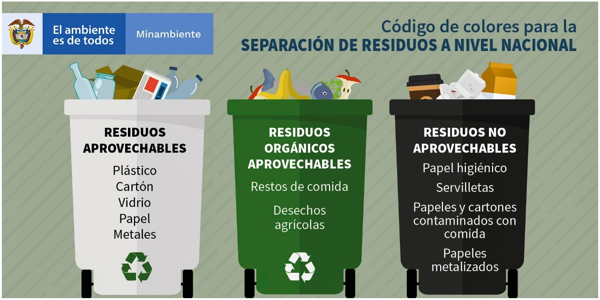
Código de Colores Unificado
- 🟢 Verde - Residuos orgánicos aprovechables: restos de comida, desechos agrícolas.
- ⚪ Blanco - Residuos aprovechables: plástico, vidrio, metales, papel y cartón.
- ⚫ Negro - Residuos no aprovechables: papel higiénico, servilletas, papeles contaminados, papel metalizado, entre otros.
Uso Racional de Bolsas Plásticas
Además, se adoptó el Formato Único Nacional para el Programa de Uso Racional de Bolsas Plásticas, con el fin de fomentar la cultura del cuidado del medio ambiente en todo el país.
¡Ya conoces lo esencial! 🌱
Ahora pon a prueba lo aprendido.